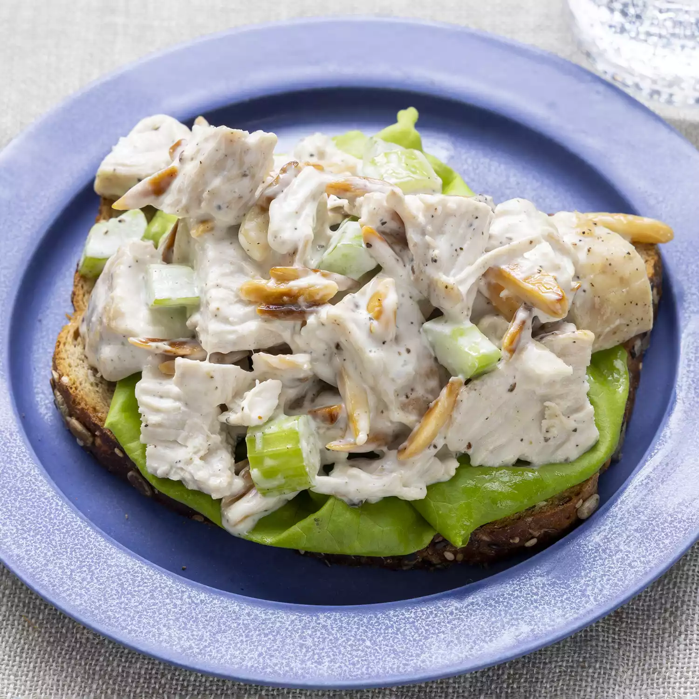

Basic Chicken Salad
Back to homepage

Description
This basic chicken salad is a family favorite. I like to use baked thighs
or breasts that have been sprinkled with basil or rosemary.
Everyone needs a good, basic chicken salad recipe in their collection of
fool-proof dishes. Homemade chicken salad is quick and easy to make with
just a handful of everyday ingredients, and is perfect for warm weather
picnics, potlucks, lunches, or light dinners. You can add or substitute
chicken salad ingredients to suit your preferences, and it's genius at
using up leftovers. I'll show you how to make tasty chicken salad using
this top-rated recipe for Basic Chicken Salad, and share plenty of tips
and ideas along the way.
Chicken Salad Ingredients
-
Chicken: chopped or shredded. If you have leftover
roast chicken, grilled chicken, or rotisserie chicken, chicken salad is
a great way to use it all up. You can also use canned chicken to make
chicken salad (drain it first), or you can cook chicken for chicken
salad. Use white or dark meat, or a combination of both if you prefer.
-
Mayonnaise: Creamy mayonnaise binds together all the
separate ingredients for chicken salad into a satisfying mixture of
flavors and textures. Use your choice of regular or reduced fat
mayonnaise. In this chicken salad recipe, the mayonnaise is enhanced
with a tablespoon of lemon juice for brightness and a ¼ teaspoon of
ground black pepper. Taste the dressing before mixing it with the
chicken; you may find it needs a little salt or other flavor-booster
from your spice collection.
-
Celery: Fresh, crisp celery adds both flavor and
crunch. Be sure to chop the celery into small, uniform pieces so it's
easier to eat.
-
Almonds: Here's the secret ingredient that makes this
chicken salad recipe stand apart. Blanched slivered almonds (available
at any grocery store) are quickly pan-toasted to bring out their nutty
flavor, and then added to the chicken salad mixture.
Chicken Salad Recipe Add-Ins
There's a lot you can do with a good basic recipe for chicken salad. Add
minced fresh herbs like parsley, chives, basil, or tarragon. Add fresh
grapes for juicy little bursts of flavor. Add cooked pasta to stretch the
chicken salad into a larger meal. (You'll have to increase the amount of
mayonnaise mixture to cover the pasta.) Add chopped apples and walnuts to
make it a Chicken Waldorf Salad. Experiment with add-ins to make this
chicken salad recipe your own.
How to Store Chicken Salad
Store chicken salad in an airtight container in the refrigerator. Stored
properly, chicken salad should last for three to five days. If you served
chicken salad over salad greens, try to store the greens separately to
prevent them from getting soggy and wilted.
Can You Freeze Chicken Salad?
We do not recommend freezing chicken salad because the mayonnaise will
separate as it thaws.
Ingredients we will use
- ½ cup blanched slivered almonds
- ½ cup mayonnaise
- 1 tablespoon lemon juice
- ¼ teaspoon ground black pepper
- 2 cups chopped, cooked chicken meat
- 1 stalk celery, chopped
Steps
-
Place almonds in a frying pan. Toast over medium-high heat, shaking
frequently. Watch carefully, as they burn easily.
-
Mix together mayonnaise, lemon juice, and pepper in a medium bowl. Toss
with chicken, toasted almonds, and celery.